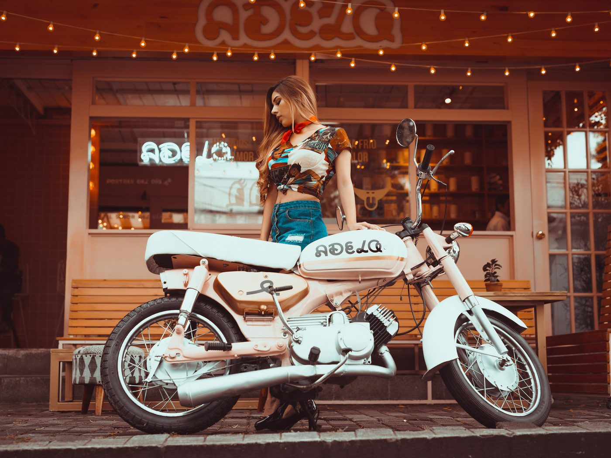
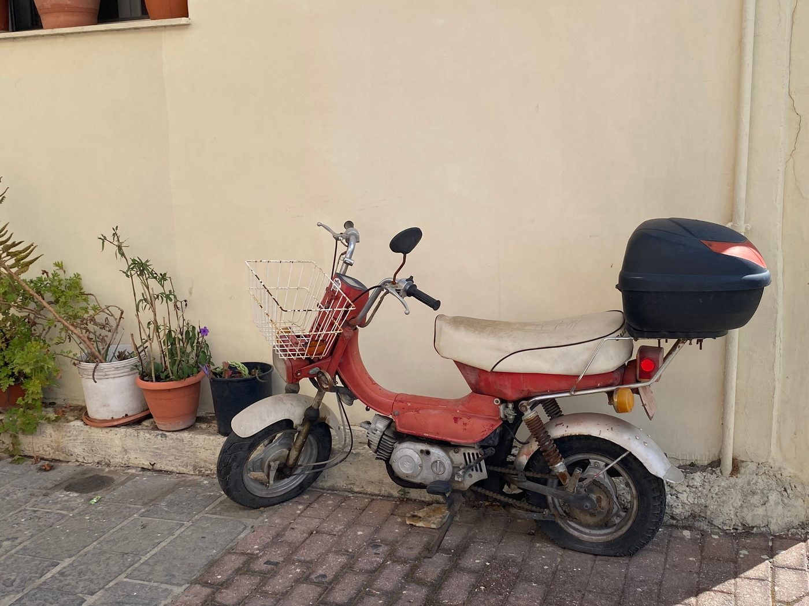

Одна цена на все байки 50сс и никакого торга — почему так
Во Вьетнаме торг — часть культуры, и мы это прекрасно понимаем. Поэтому объясняем свою позицию сразу, до того как вы приедете на осмотр: у всех байков 50сс в наличии одна цена — 10 000 000 ₫ (≈ 400 $ · 37 000 ₽), и мы её не двигаем. Ни в большую сторону, ни в меньшую.
Что такое «одна цена» на практике
Это значит, что цена не зависит от модели, цвета, года первой регистрации, пробега, вашего гражданства и того, насколько хорошо вы торгуетесь. Ретро-мокик и скутер-автомат в нашем наличии стоят одинаково. Байк с пробегом 9 800 км и байк с пробегом 48 600 км стоят одинаково.
Разница между байками есть — в типе коробки, в посадке, в состоянии, во внешности. Но выбираете вы не по цене, а по тому, что вам удобнее. Это сильно упрощает разговор: вместо «за сколько отдадите» вопрос звучит «какой из них мне больше подходит».

Почему мы так работаем
Причин три, и все три в пользу покупателя.
Первая — честность к тем, кто не умеет торговаться. В схеме «цена договорная» всегда выигрывает тот, кто громче и настойчивее. Турист, который приехал на две недели и не говорит по-вьетнамски, по определению в проигрыше. Одна фиксированная цена означает, что никто не переплатил за свою вежливость.
Вторая — скорость. Мы держим небольшое наличие и быстрый цикл: нашли байк, проверили, привезли в Нячанг, подготовили, выставили, продали. Торг — это часы переписки на каждого клиента. Мы лучше потратим их на подготовку следующего байка.
Третья — предсказуемость. Цена на сайте, цена в переписке и цена на осмотре — это одно и то же число. Вам не нужно закладывать «а вдруг на месте станет дороже» и не нужно проверять, не назвали ли вам цену выше, чем соседу.
Что это означает для вас
- Не нужно готовиться к переговорам. Бюджет известен заранее: 10 000 000 ₫ и ничего сверху.
- Не нужно бояться «цены для иностранца». Она одна для всех.
- Не нужно спешить. Мы не подгоняем словами «есть другой покупатель» и не делаем скидку за быстрое решение — её просто не существует.
- Сравнение честное. Вы сравниваете байки между собой, а не пытаетесь угадать, какой из них «выторгуется» дешевле.

Частые вопросы
«А если я возьму два байка?» Цена остаётся 10 000 000 ₫ за каждый. Скидок за количество нет.
«А если я заплачу наличными / сразу / USDT?» Цена та же. Способ оплаты на неё не влияет — принимаем донги, рубли, доллары, USDT и наличные.
«А если байк с бо́льшим пробегом?» Цена та же. Пробег и состояние конкретного экземпляра мы показываем открыто, и если он вам не подходит — берите другой, а не торгуйтесь за скидку.
«А рассрочка?» Нет. Рассрочки и кредита у нас не бывает.
«А скидка, если что-то не нравится?» Нет. Если в байке есть что-то, из-за чего вы бы просили скидку, — это повод не брать этот байк, а не повод снижать цену. Никаких обид: посмотрите другой или зайдите позже.
Что входит в эту цену
Коротко: сам байк на ходу, Blue Card (cà vẹt) с объёмом 50cc, замена масла, заправка, проверка, мойка, папка байка и выдача в Нячанге. Подробный разбор — в статье что входит в 10 000 000 ₫.
Коротко
Одна цена — это не маркетинговый приём, а способ не тратить время: ваше на переговоры, наше на переписку. Вы выбираете байк по себе, платите ровно 10 000 000 ₫ и уезжаете. Дальше полезно посмотреть наличие в каталоге и прочитать как проходит покупка.